Desktop 1440 · Homepage Baseline
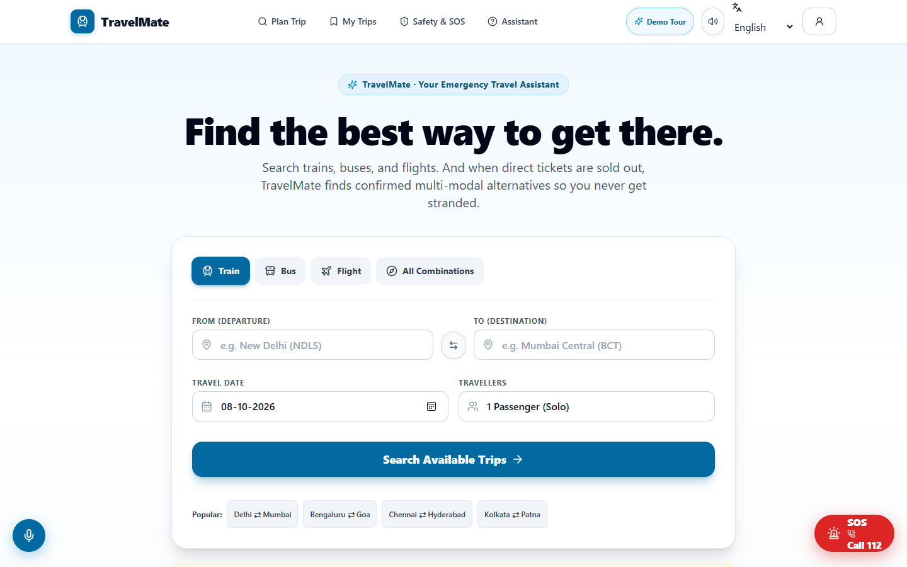
Mobile 390 · Homepage Baseline
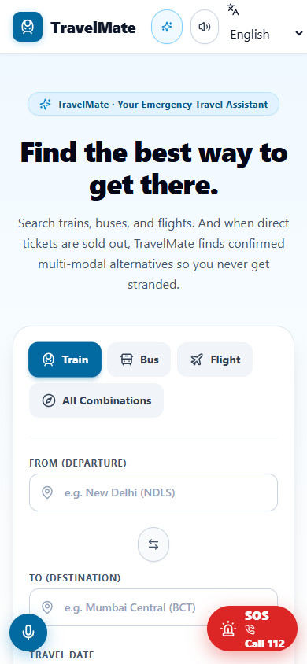
Desktop 1440 · Journey Planner Baseline
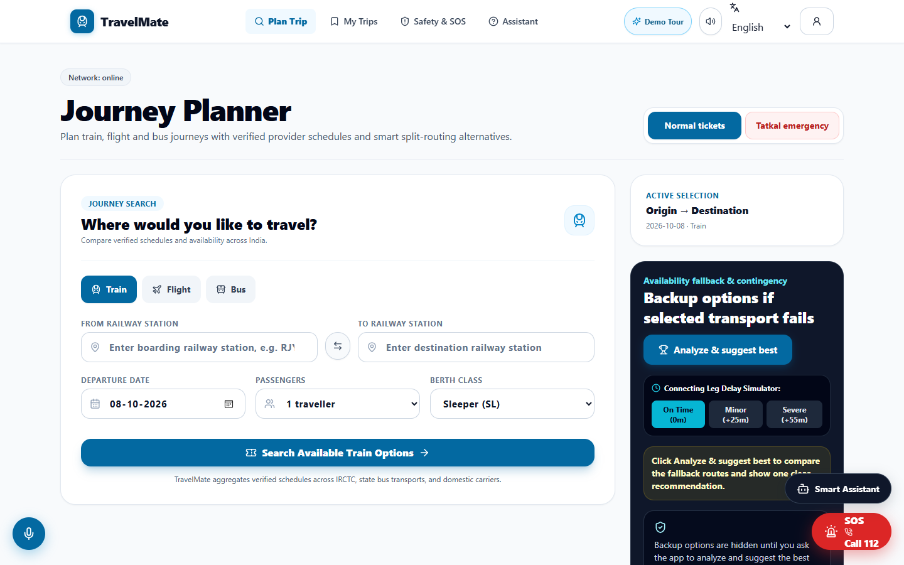
Mobile 390 · Journey Planner Baseline
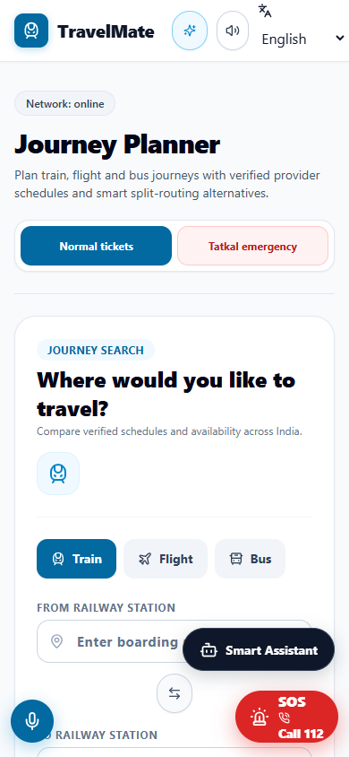
Desktop 1440 · Tatkal Emergency Desk Baseline
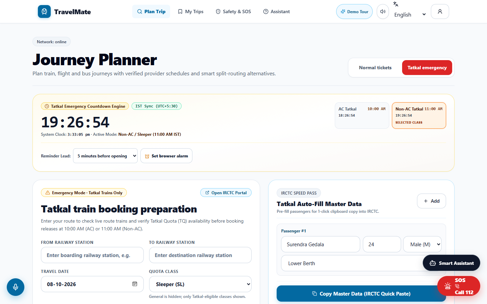
Mobile 390 · Tatkal Emergency Desk Baseline
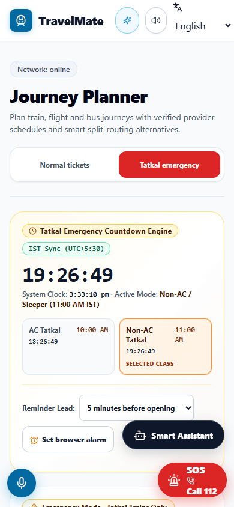
Desktop 1440 · Results Workspace Baseline
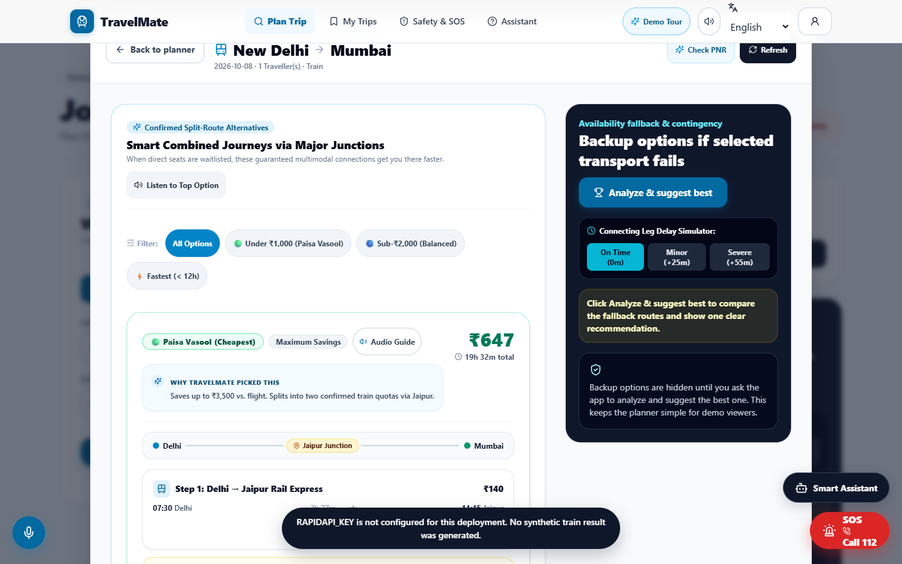
Mobile 390 · Results Workspace Baseline
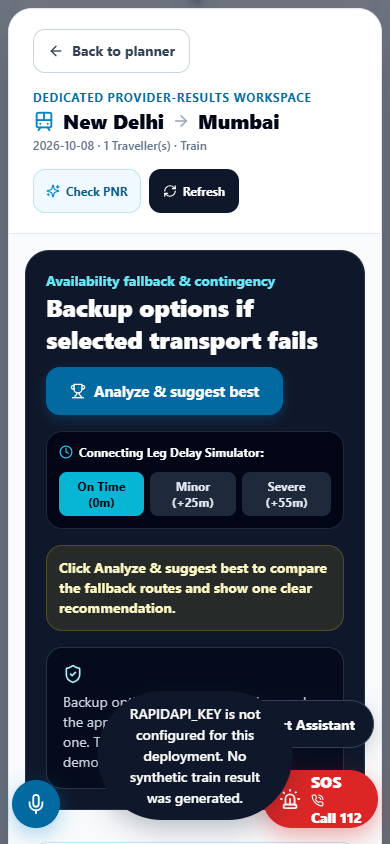
Desktop 1440 · Transit Safety Baseline
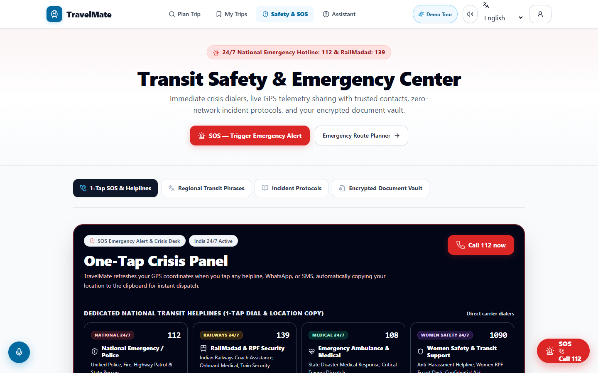
Mobile 390 · Transit Safety Baseline
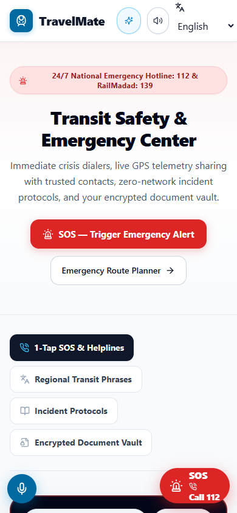
Desktop 1440 · My Trips & Passes Baseline
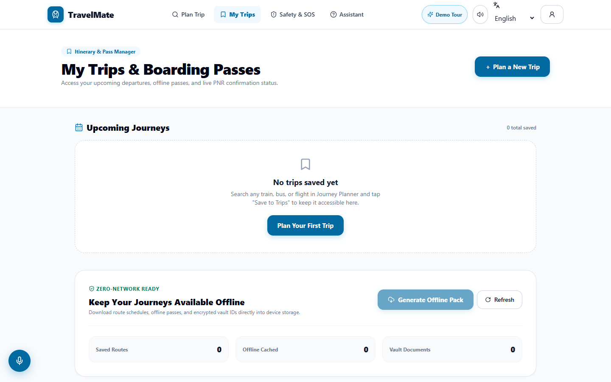
Mobile 390 · My Trips & Passes Baseline